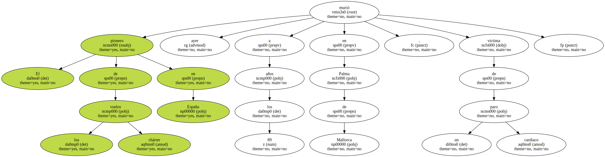

Fallece Rodolfo Bay Wright , fundador de la aerolínea Spantax.
El pionero de los vuelos chárter en España murió ayer a los 89 años en Palma de Mallorca , víctima de un paro cardiaco.
Bay , que obtuvo la licencia de piloto a los 19 años , fundó en 1959 la Spanish Air Taxis ( Spantax ) , como un servicio de taxi aéreo , que en 1960 se convirtió en la primera aerolínea española de chárter , con vuelos entre las Canarias.

La firma quebró en 1988 , tras sucesivas crisis y pasar a manos de Aviation Finance.